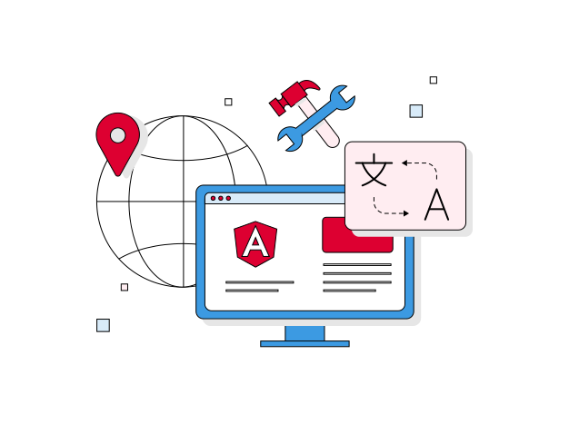

构建未来的 Web 开发框架
The web development framework for building the future
适用于任何规模
Works at any scale

Angular 让你可以从小处着手，并随着你的团队和应用程序的成长而为你提供支持。
Angular lets you start small and supports you as your team and apps grow.
受百万人喜爱
Loved by millions

加入数百万使用 Angular 进行构建的开发人员的行列，加入一个繁荣而友好的社区。
Join the millions of developers building with Angular in a thriving and friendly community.
为所有人打造
Build for everyone

依靠 Angular 的国际化工具、安全性和无障碍性为世界各地的每个人打造。
Rely on Angular's internationalization tools, security, and accessibility to build for everyone around the world.